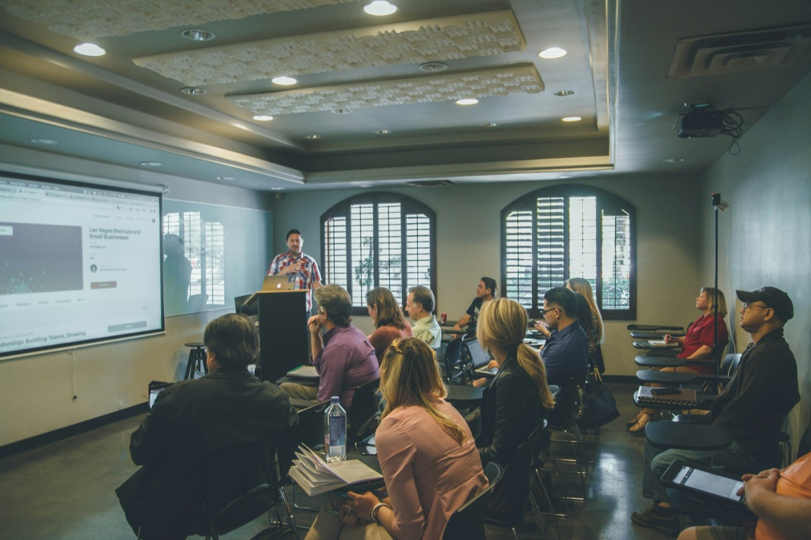

A Academia
Uma história escrita a muitas mãos.
Fundada em 2000, a Academia Itapetinguense de Letras reúne escritores, leitores e pesquisadores em torno da língua e da memória de Itapetinga.

Sobre
A palavra como patrimônio.
A Academia Itapetinguense de Letras nasceu em 20 de fevereiro de 2000, por inspiração de Ramiro Antonio Moreira Oliveira e Valdemar de Souza Ferraz. Em 26 de maio de 2001, tomaram posse os doze acadêmicos fundadores, em uma cerimônia que marcou o reconhecimento público da instituição.
Desde então, a AIL mantém viva a produção literária de Itapetinga e do sertão baiano — em sessões, publicações, concursos, audiências públicas e encontros abertos à comunidade.
Conheça os acadêmicos
Institucional
As pessoas e as regras da casa.
Diretoria, presidentes e estatuto ganharam páginas próprias para contar cada parte da história com mais cuidado.

Gestão 2026–2027
Diretoria
Seis nomes à frente das decisões e dos encontros da Academia.
Conhecer
Memória
Presidentes
Quem presidiu a Academia desde a fundação, em 2000.
Conhecer
Documento
Estatuto
As normas que organizam a instituição e suas cadeiras.
Consultar
A Academia na cidade
Audiências públicas
Homenagens e encontros que levam a literatura para além da sede.
Ver registrosAudiências públicas
A Academia na cidade.
Homenagens, parcerias e encontros que levam a literatura para além da sede.
Propor uma parceriaAudiência pública
Castro Alves
Uma homenagem ao poeta dos escravos e à sua força na literatura baiana.
Ver registroAudiência pública
Loja Maçônica de Itapetinga
Os 50 anos da Loja Maçônica Amor e União Itapetinguense, em parceria com a Academia.
Ver registroAudiência pública
Camilo de Jesus Lima
Uma noite dedicada ao poeta de Itapetinga, patrono da cadeira 8 da AIL.
Ver registroAudiência pública
Juvino Oliveira
O centenário de Juvino Oliveira e sua trajetória de serviço à cidade.
Ver registro